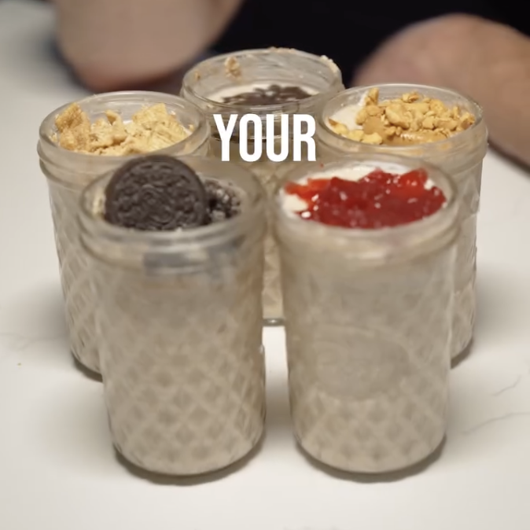

Overnight Oats 4 ingredientes
Ingredientes:
70 g Avena
1 scoop Proteína
30 g Yogur Griego
Leche o Agua
Instrucciones:
Poner ingredientes en vaso
Mezclar los ingredientes y tapar vaso
Mandar el vaso al refrigerador por unas horas
Vea la receta completa aquí